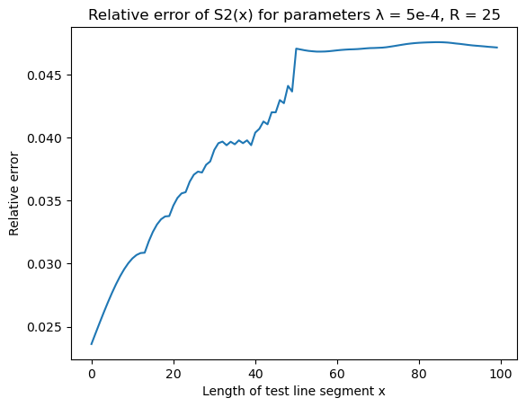
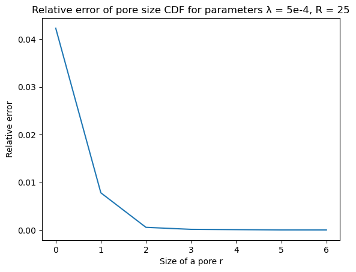
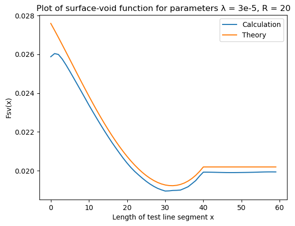

Directional Functions
This is a documentation for CorrelationFunctions.Directional module. The documentation is divided into the following topics:
- Boundary Conditions page describes boundary conditions when calculations cross the boundary of a system.
- Directions page describes directions along which the correlation functions are computed.
- Correlation Functions page contains the exhaustive list of correlation functions supported by this package.
- Results page contains comparison of correlation functions from this package with some known theoretical results.
Boundary Conditions
When calculating the value of correlation functions like $S_2$ or $L_2$ it may be necessary to cross a boundary of the input array (i.e. access array using an arbitrary index). There two options how CorrelationFunctions.jl handles this situation:
- Impose "closed walls" (CW) boundary conditions on the input data. This means that the boundary is not crossed and correlation functions gather less statistics for bigger length of test line segments.
- Impose periodic boundary conditions (PBC) on the input data. This means that the input is wrapped around itself (i.e. modular arithmetic is used to access the array).
PBC is used when you specify periodic = true when call a correlation function, otherwise CW is used.
Directions
Functions based on two-point statistics from Directional module will require a direction along which the function is calculated (usually as their third argument). You can specify these directions:
CorrelationFunctions.Utilities.DirX — TypeDirX()A subtype of AbstractDirection Corresponds to vectors [1], [1, 0] or [1, 0, 0].
See also: AbstractDirection.
CorrelationFunctions.Utilities.DirY — TypeDirY()A subtype of AbstractDirection Corresponds to vectors [0, 1] or [0, 1, 0].
See also: AbstractDirection.
CorrelationFunctions.Utilities.DirZ — TypeCorrelationFunctions.Utilities.DirXY — TypeDirXY()A subtype of AbstractDirection Corresponds to vectors [1, 1] or [1, 1, 0].
See also: AbstractDirection.
CorrelationFunctions.Utilities.DirYX — TypeDirYX()A subtype of AbstractDirection Corresponds to vectors [-1, 1] or [-1, 1, 0].
See also: AbstractDirection.
CorrelationFunctions.Utilities.DirXZ — TypeDirXZ()A subtype of AbstractDirection Corresponds to a vector [1, 0, 1].
See also: AbstractDirection.
CorrelationFunctions.Utilities.DirZX — TypeDirZX()A subtype of AbstractDirection Corresponds to a vector [-1, 0, 1].
See also: AbstractDirection.
CorrelationFunctions.Utilities.DirYZ — TypeDirYZ()A subtype of AbstractDirection Corresponds to a vector [0, 1, 1].
See also: AbstractDirection.
CorrelationFunctions.Utilities.DirZY — TypeDirZY()A subtype of AbstractDirection Corresponds to a vector [0, -1, 1].
See also: AbstractDirection.
CorrelationFunctions.Utilities.DirXYZ — TypeDirXYZ()A subtype of AbstractDirection Corresponds to a vector [1, 1, 1].
See also: AbstractDirection.
CorrelationFunctions.Utilities.DirXZY — TypeDirXZY()A subtype of AbstractDirection Corresponds to a vector [1, -1, 1].
See also: AbstractDirection.
CorrelationFunctions.Utilities.DirYXZ — TypeDirYXZ()A subtype of AbstractDirection Corresponds to a vector [-1, 1, 1].
See also: AbstractDirection.
CorrelationFunctions.Utilities.DirZYX — TypeDirZYX()A subtype of AbstractDirection Corresponds to a vector [1, 1, -1].
See also: AbstractDirection.
CorrelationFunctions.Utilities.AbstractDirection — TypeAbstractDirectionAbstract type for direction vectors used in calculation of directional correlation functions. Each subtype of AbstractDirection corresponds with one 2D and/or one 3D vector along which slices are taken for calculation.
See also: DirX, DirY, DirZ, DirXY, DirYX, DirXZ, DirZX, DirYZ, DirZY, DirXYZ, DirXZY, DirYXZ, DirZYX.
The module Map can use these directions to extract directional information from correlation maps.
These rules can help you to memoize the correspondence between symbolic designations and vectors:
DirFootypes can contain from one to three charactersX,YandZ. Each character can occur only once (there is a typeDirXYZ, but no typeDirXXY).- When a character does not occur is a designation (e.g, there is no
ZinDirXY) that coordinate remains constant in a slice (in the example above $z = \text{const}$). - The names of the axes have a "natural order" which is
X,Y,Z. In a designation, the first axis which breaks that order get the minus sign in the direction vector (e.g.DirXZYequals to(1, -1, 1)becauseYis in the third position, not in the second,DirZXequals to(-1, 0, 1)becauseXis in the second position, not in the first, etc.)
Functions based on three-point statistics require a set of points in which they are calculated (usually as the third and the fourth arguments). This set can be generated by Utilities.right_triangles function.
Correlation Functions
Two-point statistics
CorrelationFunctions.Directional.s2 — Functions2(array, phase, direction[; len] [,mode = NonPeriodic()])
s2(array, SeparableIndicator(χ₁, χ₂), direction[; len] [,mode = NonPeriodic()])
s2(array, InseparableIndicator(χ), direction[; len] [,mode = NonPeriodic()])Calculate S₂ (two point) correlation function for one-, two- or three-dimensional multiphase system.
S₂(x) equals to probability that corner elements of a line segment with the length x cut from the array belong to the same phase. This implementation calculates S₂(x) for all xes in the range from 1 to len which defaults to half of the minimal dimenstion of the array.
More generally, you can provide indicator function χ instead of phase. In this case S₂ function calculates probability of χ(x, y) returing true where x and y are two corners of a line segment. Indicator functions must be wrapped in either SeparableIndicator or InseparableIndicator. Some computations for separable indicator functions are optimized.
Examples
julia> s2([1,1,1,0,1,1], 1, DirX(); len = 6)
6-element Vector{Float64}:
0.8333333333333334
0.6
0.5
0.6666666666666666
1.0
1.0See also: Utilities.AbstractDirection.
CorrelationFunctions.Directional.c2 — Functionc2(array, phase, direction[; len,] [mode = NonPeriodic])Calculate C₂ (cluster) correlation function for one-, two- or three-dimensional multiphase system.
C₂(x) equals to probability that corner elements of a line segment with the length x cut from the array belong to the same cluster of the specific phase. This implementation calculates C2 for all xes in the range from 1 to len which defaults to half of the minimal dimension of the array.
Examples
julia> c2([1,1,1,0,1,1], 1, DirX(); len = 6)
6-element Array{Float64,1}:
0.8333333333333333
0.5999999999999999
0.24999999999999994
2.4671622769447922e-17
9.25185853854297e-17
5.181040781584064e-16For a list of possible directions, see also: Utilities.AbstractDirection.
CorrelationFunctions.Directional.cross_correlation — Functioncross_correlation(array, phase1, phase2, direction[; len] [,mode = NonPeriodic()])Calculate cross-correlation between phase1 and phase2 in array. The meaning of optional arguments is the same as for s2 function.
See also: s2.
CorrelationFunctions.Directional.surf2 — Functionsurf2(array, phase, direction[; len] [,mode = NonPeriodic()][, filter])Calculate surface-surface correlation function for one-, two- or three-dimensional multiphase system. This implementation calculates surface-surface function for all xs in the range from 1 to len which defaults to half of the minimal dimension of the array.
You can chose how an edge between phases is selected by passing filter argument of type Utilities.AbstractKernel.
If phase is a function it is applied to array to select the phase of interest, otherwise the phase of interest is selected by testing elements of array for equality with phase.
See also: Utilities.AbstractDirection, Utilities.AbstractKernel.
CorrelationFunctions.Directional.surfvoid — Functionsurfvoid(array, phase, direction[; len] [,void_phase = 0][, mode = NonPeriodic()][, filter])Calculate surface-void correlation function for one-, two- or three-dimensional multiphase system. This implementation calculates surface-void function for all xs in the range from 1 to len which defaults to half of the minimal dimension of the array.
You can chose how an edge between phases is selected by passing filter argument of type Utilities.AbstractKernel.
If phase is a function it is applied to array to select the phase of interest, otherwise the phase of interest is selected by testing elements of array for equality with phase. void_phase can also be either a function or some other object and is used as an indicator for the void phase.
See also: Utilities.AbstractDirection, Utilities.AbstractKernel.
Three-point statistics
CorrelationFunctions.Directional.s3 — Functions3(array, ps1, ps2[, mode = NonPeriodic()])Calculate the three-point correlation function in an array of points.
Two arguments ps1 and ps2 must be arrays of N-tuples of integers (where N is a dimensionality of the input array) broadcastable to the same size. Periodic or zero-padding boundary conditions are selected with the choose of mode argument.
The following invariants hold:
julia> data = rand(Bool, (100, 100, 100));
julia> shiftsx = [(i, 0, 0) for i in 0:49];
julia> shiftsy = [(0, i, 0) for i in 0:49];
julia> shiftsz = [(0, 0, i) for i in 0:49];
julia> s2x = D.s2(data, 1, U.DirX());
julia> s2y = D.s2(data, 1, U.DirY());
julia> s2z = D.s2(data, 1, U.DirZ());
julia> s2x_ = D.s3(data, [(0,0,0)], shiftsx);
julia> s2y_ = D.s3(data, [(0,0,0)], shiftsy);
julia> s2z_ = D.s3(data, [(0,0,0)], shiftsz);
julia> s2x == s2x_
true
julia> s2y == s2y_
true
julia> s2z == s2z_
trueSee also: right_triangles, s2.
s3(array, phase, ps1, ps2[; mode = NonPeriodic()])The same as s3(array .== phase; ...). Kept for consistency with other parts of the API.
CorrelationFunctions.Directional.c3 — Functionc3(array, phase[; planes :: Vector{AbstractPlane}, len, mode = NonPeriodic()])Calculate three-point cluster correlation function.
This function is is internally calculated using s3 and hence uses the same sampling pattern and returns a result in the same format.
See also: s3, AbstractPlane.
CorrelationFunctions.Directional.surf3 — Functionsurf3(array, ps1, ps2[; mode = NonPeriodic()][, filter :: AbstractKernel])Calculate surface-surface-surface ($F_{sss}$) correlation function.
This function is is internally calculated using s3 and hence uses the same sampling pattern and returns a result in the same format.
You can chose how an edge between phases is selected by passing filter argument of type Utilities.AbstractKernel.
See also: s3, right_triangles, AbstractKernel.
surf3(array, phase[; mode = NonPeriodic()][, filter = ConvKernel(7)])The same as surf3(array .== phase; ...). Kept for consistency with other parts of the API.
CorrelationFunctions.Directional.surf2void — Functionsurf2void(array, phase, ps1, ps2[, void_phase = 0][; mode = NonPeriodic()][, filter :: AbstractKernel])Calculate surface-surface-void ($F_{ssv}$) correlation function.
This function is is internally calculated using s3 and hence uses the same sampling pattern and returns a result in the same format.
You can chose how an edge between phases is selected by passing filter argument of type Utilities.AbstractKernel.
See also: s3, right_triangles, AbstractKernel.
CorrelationFunctions.Directional.surfvoid2 — Functionsurfvoid2(array, phase, ps1, ps2[, void_phase = 0][; mode = NonPeriodic()][, filter :: AbstractKernel])Calculate surface-void-void ($F_{svv}$) correlation function.
This function is is internally calculated using s3 and hence uses the same sampling pattern and returns a result in the same format.
You can chose how an edge between phases is selected by passing filter argument of type Utilities.AbstractKernel.
See also: s3, AbstractPlane, AbstractKernel.
Other correlation functions
CorrelationFunctions.Directional.pore_size — Functionpore_size(array, phase = 0; mode = NonPeriodic())Calculate pore size correlation function for one-, two- or three-dimensional multiphase systems.
This implementation returns an array of pore sizes where each size is equal to the distance from a particular point in the pore to the closest point not belonging to the phase phase.
Example
julia> data = [1 1 1 1 1; 1 1 0 1 1; 1 0 0 0 1; 1 1 0 1 1; 1 1 1 1 1]
5×5 Matrix{Int64}:
1 1 1 1 1
1 1 0 1 1
1 0 0 0 1
1 1 0 1 1
1 1 1 1 1
julia> D.pore_size(data, 0)
5-element Vector{Float64}:
1.0
1.0
1.4142135623730951
1.0
1.0CorrelationFunctions.Directional.chord_length — Functionchord_length(array, phase, direction)Calculate the chord length correlation function for one-, two- or three-dimensional multiphase systems.
A chord is a line segment which touches the boundary of a same-phase cluster with its ends.
This implementation returns an array of chord lengths where each length is equal to a number of voxels in the phase phase belonging to a chord.
Examples
julia> chord_length([1, 0, 0, 0, 0, 1, 0, 1], 0, DirX())
2-element Vector{Int64}:
4
1For a list of possible dimensions, see also: Utilities.AbstractDirection.
CorrelationFunctions.Directional.l2 — Functionl2(array, phase, direction[; len][, mode = NonPeriodic()])Calculate L₂ (lineal path) correlation function for one-, two- or three-dimensional multiphase system.
L₂(x) equals to probability that all elements of a line segment with length x cut from the array belong to the same phase. This implementation calculates L₂(x) for all xes in the range from 1 to len which defaults to half of the minimal dimension of the array.
Examples
julia> l2([1,1,1,0,1,1], 1, DirX(); len = 6)
6-element Array{Float64,1}:
0.8333333333333334
0.6
0.25
0.0
0.0
0.0For a list of possible dimensions, see also: Utilities.AbstractDirection.
The pore_size function is also reexported from CorrelationFunctions directly, not being actually a "directional" function.
Results
CorrelationFunctions.jl is tested on overlapping disks and balls of constant radius $R$ with centers generated by Poisson process with parameter $\lambda$ (see section 5.1 of Random Heterogeneous Materials). An example of a two-dimensional two-phase system generated in this way is on the picture ($R = 25$ and $\lambda = 5 \cdot 10^{-4}$):

Plots of all correlation functions calculated by CorrelationFunctions.jl for overlapping disks along with their theoretical values are given below. There are also plots of relative errors calculated as
\[\text{err}(x) = \mid \frac{\text{calculation}(x) - \text{theory}(x)}{\text{theory}(x)} \mid\]
Two-dimensional systems
Methodology
All functions in this section with exception of pore size and chord length functions are calculated on 15 random datasets generated with parameters $R = 25$ and $\lambda = 5 \cdot 10^{-4}$. Each dataset is an image with dimensions 4000x4000 pixels. The final result is an average of results on those 15 datasets. When function fastly decreases to zero a plot of a natural logarithm of that function is provided.
Pore size and chord length functions are calculated on one 4000x4000 dataset with the same parameters as above. A theoretical value is computed by averaging a theoretical function across each bin of a histogram returned by pore_size or chord_length function. Because both pore size and cord length functions decrease to zero with increase of their arguments, the relative errors are calculated for the corresponding cummulative distribution functions.
All functions are called with default optional arguments unless explicitly stated otherwise.
Two point $S_2(x)$ function
| S2 | Error |
|---|---|
 |  |
Lineal path $L_2(x)$ function
| L2 | Error |
|---|---|
 |  |
Surface-surface $F_{ss}(x)$ function
| Surface-surface | Error |
|---|---|
 |  |
Surface-void $F_{sv}(x)$ function
| Surface-void | Error |
|---|---|
 |  |
Pore size $P(x)$ function
| Pore size | Error |
|---|---|
|  |
Chord length $p(x)$ function
Chord length function chord_length was called with parameter nbins = 30.
| Chord length | Error |
|---|---|
 |  |
Three-dimensional systems
Methodology
The idea is the same as in two-dimensional case, but chosen parameters are slightly different. The functions are averaged over 5 500x500x500 datasets with ball radius $R = 20$ and Poisson process parameter $\lambda = 3 \cdot 10^{-5}$.
Two point $S_2(x)$ function
| S2 | Error |
|---|---|
 |  |
Lineal path $L_2(x)$ function
| L2 | Error |
|---|---|
 |  |
Surface-surface $F_{ss}(x)$ function
| Surface-surface | Error |
|---|---|
 |
Surface-void $F_{sv}(x)$ function
| Surface-void | Error |
|---|---|
|  |  |
Pore size $P(x)$ function
| Pore size | Error |
|---|---|
 |  |
Chord length $p(x)$ function
Chord length function chord_length was called with parameter nbins = 30.
| Chord length | Error |
|---|---|
 |